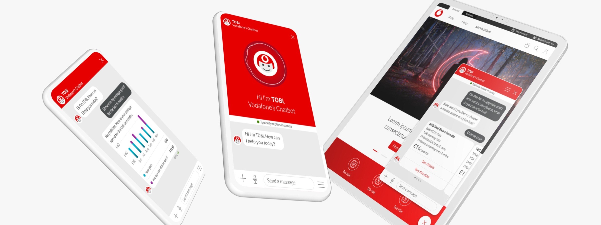
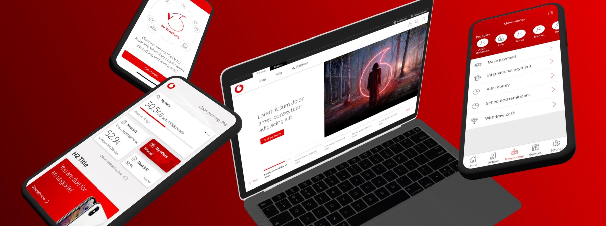

Case study · Vodafone
From an AI chatbot to a global design system
I designed TOBi, Vodafone's AI chatbot, then established and led Source, the Design System that grew out of it, used by 180+ people across 16 markets.
Vodafone was where I started moving from thinking about individual digital products to thinking about the systems behind them. Alongside retail and IoT work, TOBi gave me the chance to try something different, and that product design challenge became the starting point for Source. I then made sure products like the My Vodafone app and M-Pesa aligned with it.
Design systems
- Established Source as its sole designer
- Foundations, components, patterns, assets and documentation
- Governance, adoption and a network of champions across markets
Product design
- TOBi, Vodafone's AI chatbot: conversation, tone and personality
- Retail and IoT experiences
- Supporting the teams to apply the Design System to products

Designing TOBi
Vodafone's contact-centre technology wasn't meeting customer expectations, and customers needed easier ways to access information, support and account services. TOBi was introduced as a conversational AI experience to handle common enquiries and complete tasks without always needing a call centre, but traditional interface patterns didn't translate directly into conversation.
I introduced a component and Design System approach specifically for conversational UI: message bubbles, notifications, options, states, content and actions became reusable building blocks that could be assembled into complete journeys, rather than designed from scratch each time. That made the work faster to design, easier to iterate and more consistent as the number of journeys grew.
We wanted TOBi to feel approachable and personable while staying clearly identifiable as a chatbot. I helped establish principles around tone of voice, personality, emotional expression and visual behaviour, building on Vodafone's existing TOBi character rather than creating something new, and developing a broader set of expressions that could respond to different moments in a conversation, with motion explored alongside a motion designer. These expressions became part of the system, not isolated illustrations.
The overarching principle for TOBi was simple: simplify complexity. Every interaction needed to make clear what's happening → what you can do → what happens next, a principle that shaped both the conversational experience and the reusable patterns behind it.
From TOBi to Source
Designing TOBi through reusable components, tokens and patterns let us move much faster than designing every journey independently, which raised an obvious question: if this approach worked for one Vodafone product, why not all of them? The opportunity wasn't a better chatbot. It was stopping Vodafone's digital teams from repeatedly solving the same design problems. That became the starting point for Source.
I was asked to establish Source, and remained its sole designer until I left. I started with an audit of existing products and patterns across Vodafone, then defined an approach covering design foundations, components, patterns, assets, documentation, tooling, governance and adoption, aiming to establish a shared language between Design and Engineering, not just another component library.

I stayed hands-on throughout, designing and documenting components and patterns while working with product teams and Engineering on how the system could flex across different requirements. The system supported the journey from Structure → Interaction → Visual Design → Development, making the Design System part of the product design process rather than something added at the end.
Given the scale of what we were building, InVision worked closely with our team as Source developed. I regularly met with their Product and Engineering teams to feed back on upcoming features and the challenges we hit at enterprise scale, often trialling new capabilities before wider release. I wasn't just using their tools; I was helping shape how they evolved to support large, distributed Design System teams.
Applying Source to real products
The My Vodafone App refresh became Source's first real pilot, large and complex enough to properly test whether the system worked in production. The team adopted the library and began building real experiences with it, creating a feedback loop between product requirements and the system. As the system proved itself, other teams started approaching us: adoption became pull rather than push.
Source expanded into very different products: My Vodafone App, M-Pesa, IoT and ecommerce. M-Pesa was particularly interesting: a mobile banking service for customers who often lacked access to traditional banking apps, in a product and customer context very different from what we'd originally designed for. But the same underlying Design System supported it. Teams didn't need to rebuild the foundations; they could focus on the customer problem. That's when I really understood the value of Design Systems: the system doesn't make products identical, it gives teams a better starting point.
Adoption, governance and the case for investment
As more teams adopted Source, I worked directly with markets and product teams on onboarding, adoption, design reviews and library usage, and built a network of Design System champions to support adoption locally. Governance wasn't about controlling what teams could design. It was about creating enough consistency to make the platform useful while still letting teams solve their own customer problems.
A Design System needs continued investment, so I regularly shared adoption, reuse and delivery improvements with senior stakeholders to keep the system's value visible beyond the design team. By 2020, Source was used by 180+ people a month across 16 markets, and projects using it saved around 40% of their time. We measured this by surveying the teams that adopted Source, asking how much time they saved against their original project estimates at each stage, from UX to UI. That figure reflected the wider delivery process, not just component production, and it mattered more to me than the size of the library, because it showed the system was changing how teams worked.
Designing for multiple brands
Towards the end of my time at Vodafone, I started exploring how Source could support multiple Vodafone brands through shared foundations and theming, separating shared functionality, components and code from brand expression, so different brands could keep their identity without needing entirely separate systems. We didn't fully realise this at Vodafone, but the idea became central to my next role at Smart Pension, where multi-brand and white-label support was a core requirement from day one.
What Vodafone taught me
Over three years, my role evolved from Product Designer to establishing and leading Source across Vodafone, combining hands-on product and Design System work with Engineering collaboration, governance, stakeholder management and adoption across markets. I wasn't managing a Design System from a distance; I was building it, using it, and helping other teams adopt it.
The biggest opportunity isn't always a better individual screen. It's the foundations that let hundreds of experiences get better, faster and more consistent together. A successful Design System needs more than good components: strong technical implementation, real product application, adoption, governance and trust between teams. The difficult part isn't building the button. It's creating something people want to use, and can build on.